Go is a very old strategy game that consists of capturing pieces and winning territories. It is about 2,500 years old and was invented in China, although the exact location is unknown.
What is Go?
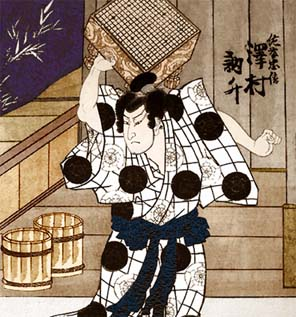It is very popular in China, Japan, and Korea (known as weiqi, igo, and baduk respectively). So popular that it is taught in schools, it has its own TV channels and even has its own anime.
Although little known in the West, it is the most played board game in the world (ahead of chess). Only in Japan 10 million people practice it, and I don’t want to imagine how many millions in China.
Introduction
Go perfectly fulfills the maxim of the founder of Atari, Nolan Bushnell, on the games:
‘…the best games are those easy to learn and difficult to master.’
Bushnell is a big fan of this game, so much so that the name of his company, ‘Atari’, is a term used in Go.
Go is played on a board like this:
Its rules are very simple and have hardly changed since it was invented:
- Both players (one with white stones and the other with black stones) play in turns, putting a single stone on the board each time (it starts empty).
- The stones must be placed on the intersection between the vertical lines and the horizontal lines, including the edges.
- Once a stone is placed, it cannot be withdrawn unless it loses all its liberties.
It is so easy to learn that the recommended age to start playing is only 5 years old. It is also proven that it is a very healthy mental exercise. There are studies on its positive effects against senile dementia and Alzheimer’s in adults. At an early age its benefits in the development of intelligence and concentration are demonstrated.
But it is so complex that it was not until 2016 that an AI managed to beat a great master (something that happened in chess 20 years earlier). If you are interested in learning more about this topic, I recommend you watch the great documentary ‘AlphaGo - The Movie’.
I finish this brief introduction with an old tale that illustrates very well what it is to play Go and tells how…
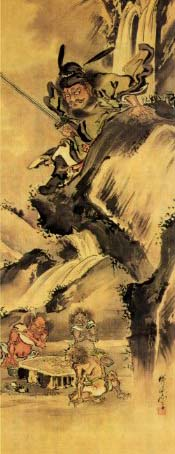the young and robust Chih ventured into the mountains to find the best wood for his ax. He went so deep into the forest that he ended up getting lost.
He wander for some time and end up discovering two strange men, very old, who were playing Go. Chih was fascinated. He put his ax aside and began to look closely. So much he got into the game that he lost track of time.
When he woke up from the deep trance, he realized that the elders had disappeared. Picking up his ax, the handle fell apart in his hands. He had grown a long white beard. Upon returning to his village his family had disappeared and no one remembered his name …
Basic rules
The official board is 19×19 positions (between 20 and 40 minutes of play), although beginners usually use boards smaller like 13×13 (between about 15 minutes of play) or 9×9 (no more than 10 minutes). To teach you the basic rules I will use a 5×5 board like this:
The stones will be placed in turns, at the intersections of the black lines (including the edges). Black usually starts, so a first move could be B4:
We already have our first group done, although for now it only has one stone. Now it would be White’s turn and they could move, for example in D2 and the board would look like this:
A group are stones of the same color that are joined at the top, bottom, left, or right. Never diagonally. Let’s see a board with only black stones and count the groups we have:
We can count three different groups. Note that the stones in C4 and D3 do not touch, they belong to two different groups. There is never diagonal contact.
I said at the beginning that one of the rules is that you cannot remove a token (or group) unless they lose their liberties. The liberty of a group is the number of free spaces around it. Consider these examples:
|
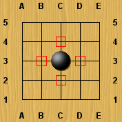
|
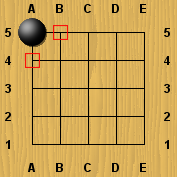
|
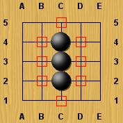
|
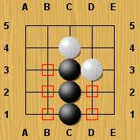
|
| A | B | C | D |
On the board A, we have a group consisting of a single stone. All of your neighbors are empty (red squares), so we have four liberties. In B we only have two neighbors and they are empty, so we have two liberties.
On the board C we already have a group of more than one token, and logically we have more liberties, we have eight. In D we see how White has taken away two liberties, so that group only has five liberties.
What happens to groups with only one liberty? These groups are said to be in ‘Atari’, in danger. Let’s see an example:
This group of stones only has one liberty, its survival is in danger. As I said at the beginning, a group without liberties is withdrawn, or captured, by the enemy. If it was White’s turn now, the logical move would be to move on B3, which is the only liberty left for that group of Black:
Running out of liberties, White removes those stones earning one point for each stone captured. The board would look like this:
In case you’re wondering, suicide is not allowed in Go. I mean, you can’t put a stone that takes away the liberties of a group (and give them points to the enemy). You will see it clearly with the following example:
If you could put a black stone on B1, you would form a group without liberties, which would be a kind of suicide. In this example, if it is Black’s turn, B1 is a forbidden move.
There is another forbidden movement, the ‘Ko’. It is used to prevent two players from repeating identical plays over and over again without stopping, something that would not make much sense either. Let’s see a very simple example with these boards:
|
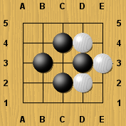
|
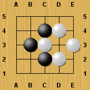
|
|
| A | B | C |
If White’s turn start on the board A, they could remove the black stone at D3 since he only has one liberty at C3 (so he is at Atari). That brings us to the board B and the turn goes to Black. Thinking of avenging their stone, they will want to eliminate the white token at C3, which is now at Atari. This brings us to the C board.
Board C is the same as board A, so this loop could be repeated forever (Ko or 劫 means eternal in Japanese). Basically, the ‘Ko’ rule tells us that we cannot make a move that recreates a board as in the previous move. In the example above:
|
|
|
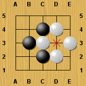
|
| A | B | C |
Black, on the board C, could put anywhere, except for D3, which would cause a ‘Ko’. On the next move, it could be used again.
These are the basic rules, it only remains to know when a game ends and how to know who wins.
A game ends when both players decide to pass their turn. A player may do so at any time during the game. Do not put any stone and pass the turn to your opponent. Normally only a turn is passed when a player considers that it is not worth putting more stones on the board. And it is that, as we will see shortly, when you think you have all your safe territories, putting superfluous stones takes away points.
When both players pass, the game is over and it’s time to count points. Let’s see a finished board and how we would count the points of both players to know who is the winner:
As I said at the beginning, the purpose of this game is to have more territory and capture stones from your opponent. Suppose the black player has captured 6 white stones and the white player has another 6 black stones as well. Let’s count how much land each player has totally encompassed:
|
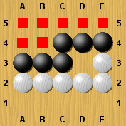
|
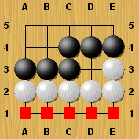
|
| Black: 7 points | White: 5 points |
Black would add 6 points for captured stones and 7 points for territory won, in total 13 points. Note that D3 does not count as won territory for anyone because it is not fully encompassed by stones of one color.
White adds 6 points for captured pieces and 5 for territory, in total 11 points. Black has won the game because they have conquered more territory than white.
Can a tie occur? The points of both players could be identical and to solve this (and another problem) the ‘Komi’ was created. This is one of the few variations that the original game rules have suffered since it was invented.
Back in 1930, the great masters of the time realized that there was an advantage to moving first (traditionally black). To fix it, they gave White an initial score to make up for that disadvantage, the ‘Komi’. Its value has varied greatly over time. In current tournaments it is set between 5.5 and 6.5. In amateur games, where players don’t know how to take advantage of that advantage, 0.5 is usually used.
Why are decimals used? Because by the way, thanks to ‘Komi’ games can never end in a draw. In the case of the example, a ‘Komi’ of 0.5 should be added to White’s score. The end result would be black 13 points, white 11.5 points, so black would continue to win.
Lets play!
You already know the basics of Go and you can start playing! If you play online, you will be interested to know that there is a way to know how good a player is. Each player has a rank according to the games he wins. When you start you don’t have any rank (normally it will tell you that you have a rank ‘?’). Until you play your first rated game (on 19×19 boards) you will not be assigned one.
Amateur players usually start with 30 kyu (Japanese system). The better you are, the less kyu you will have. When you have 1 kyu you can go to the next category and be 1 dan. Here are the best players. The better you play, the more you will have. It usually goes from 1 dan to 9 dan. The winning teacher of the most prestigious Go tournament, is usually called Judan, which means 10 dan.
To play online the best IMHO site is online-go.